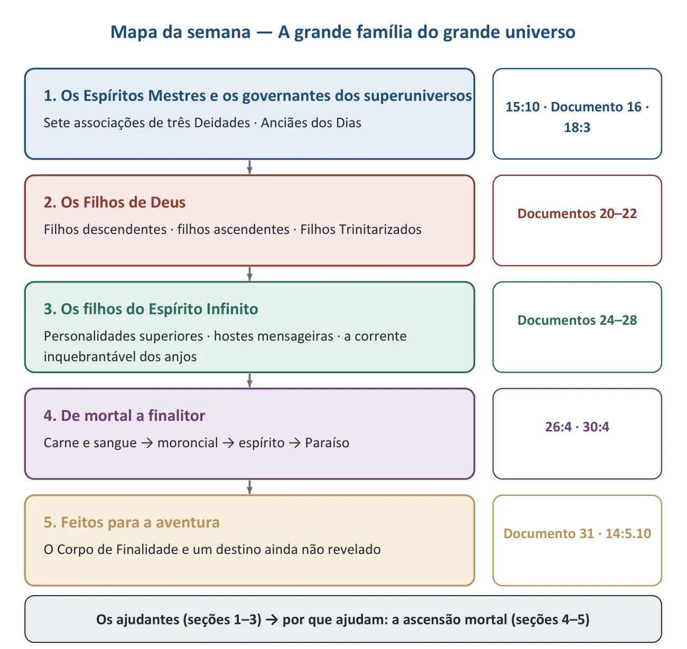
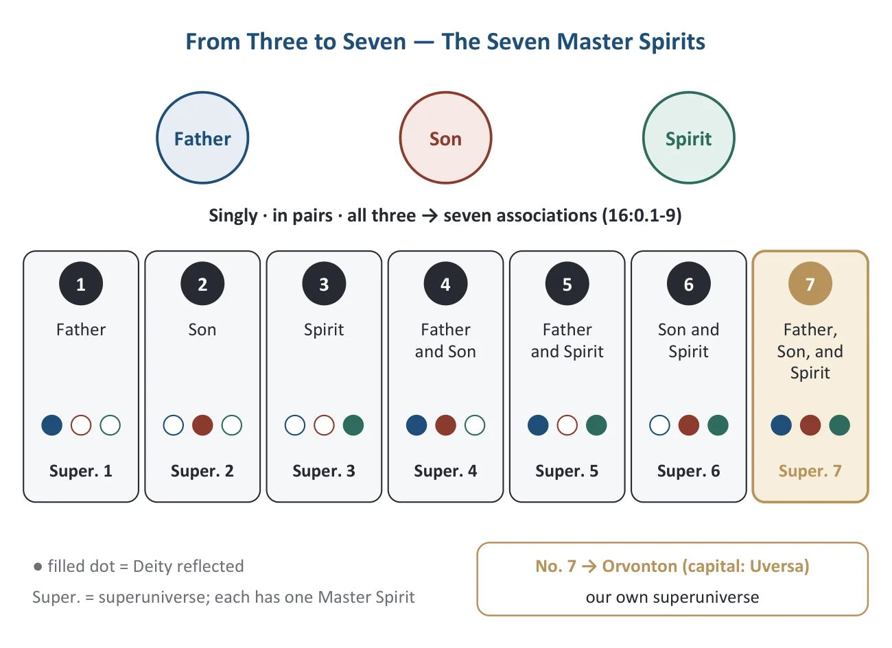
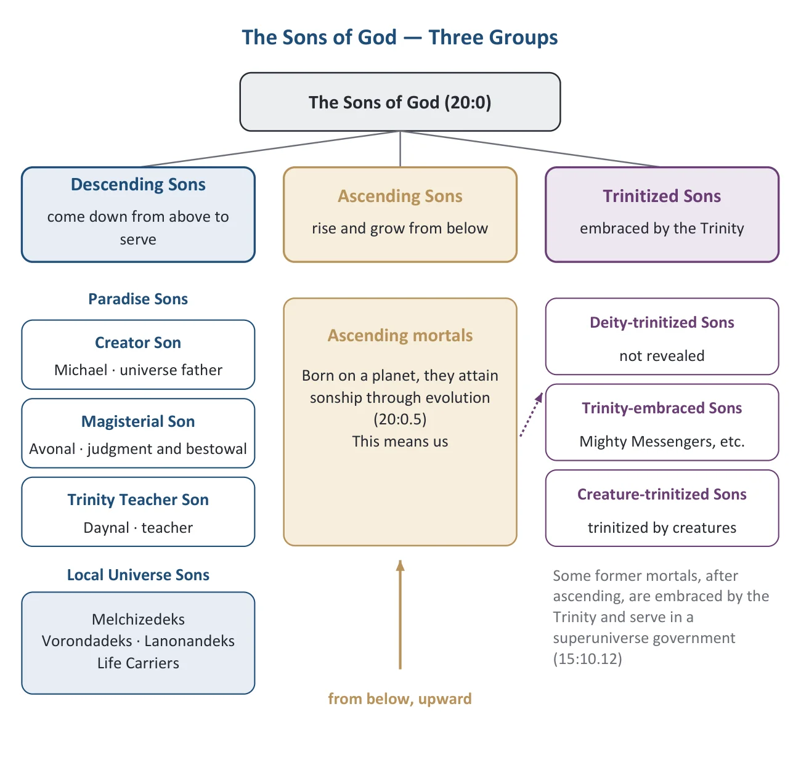
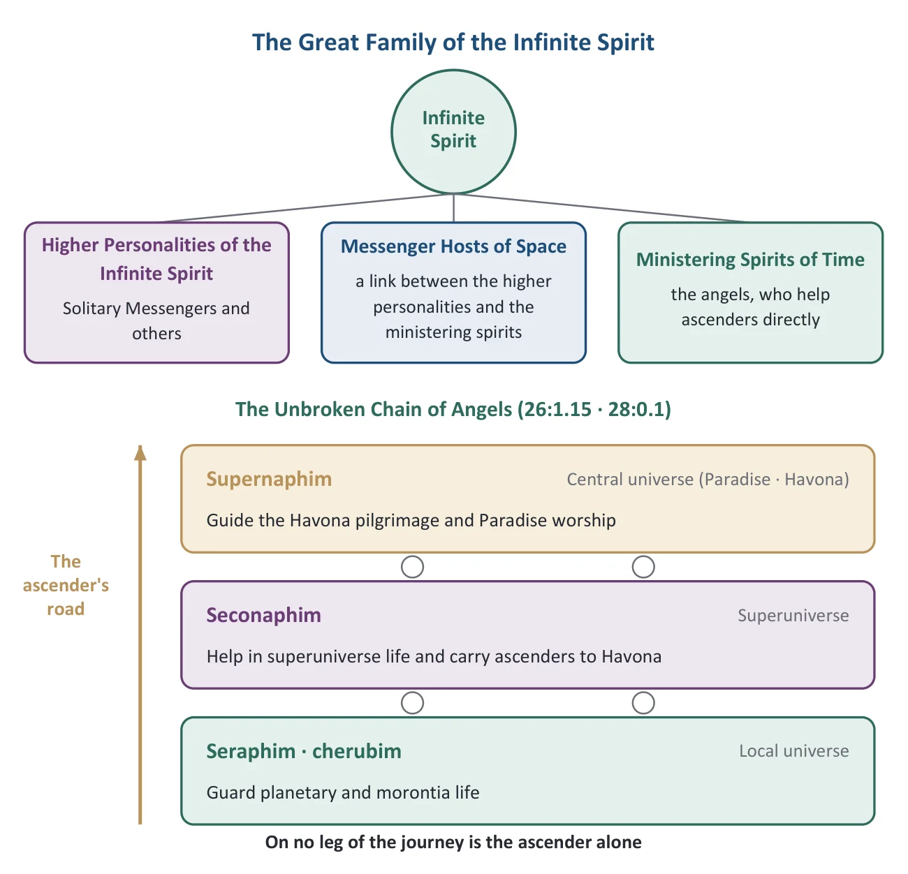
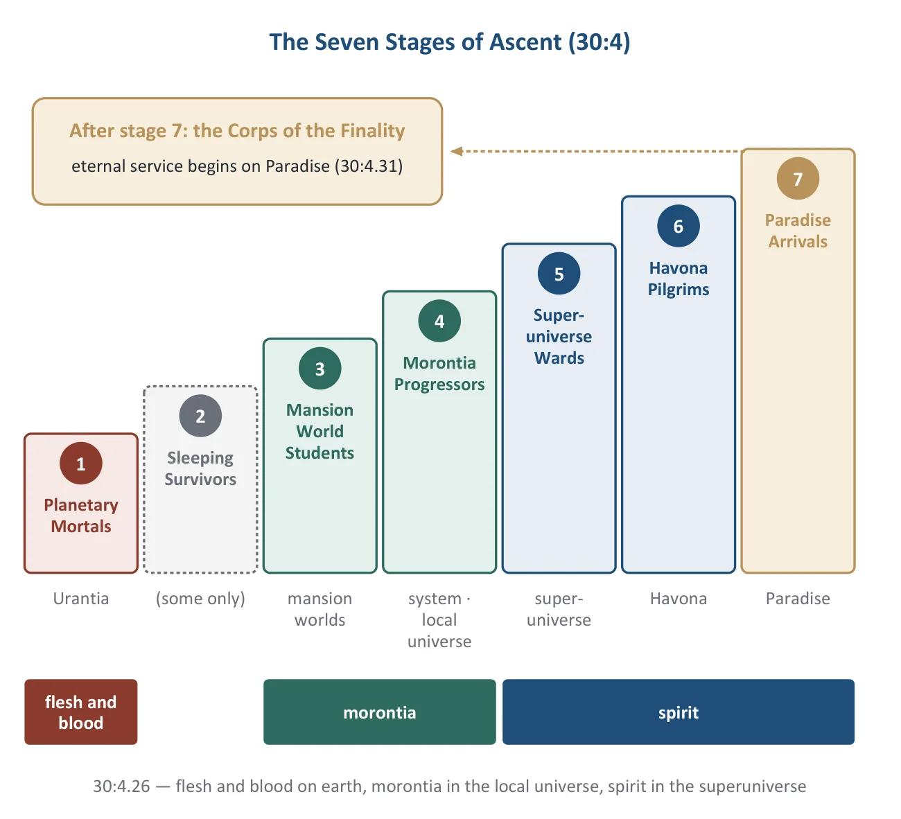

Leitura: Documento 15:10 · Documento 16 · Documento 18:3 · Documentos 20–21 · Documentos 24, 26 · Documento 30:4 · Documento 31

Os documentos 16 a 31 derramam nomes de seres de que a maioria dos leitores nunca ouviu falar; no entanto, cada uma dessas ordens está voltada para uma única tarefa: levar os mortais do tempo à perfeição do Paraíso. Os Filhos de Deus e a família angélica do Espírito Infinito ajudam ao longo do caminho, enquanto o ser humano viaja de criatura de carne e sangue, passando pela morôncia e pelo espírito, até o Paraíso e o Corpo de Finalidade. Nesta semana o objetivo não é decorar nomes, mas ver como essa grande família se organiza e onde nós estamos dentro dela.
Imagine alguém recém-casado chegando à primeira grande reunião de festas da família estendida do cônjuge. Todos os cômodos estão cheios de rostos desconhecidos: tios, tias-avós, primos de segundo grau, cônjuges de primos. Tentar descobrir quem é parente de quem logo faz a cabeça girar.
No fim do dia, porém, algo fica claro. Todos vêm da mesma raiz e se reuniram, em parte, para dar as boas-vindas ao recém-chegado. Os nomes podem ser aprendidos devagar. O que importa primeiro é saber que se foi acolhido na família.
Os documentos 16 a 31 de O Livro de Urântia são essa casa cheia. Espíritos Mestres, Anciães dos Dias, Filhos Criadores, supernafins, finalitores: os nomes chegam um após outro. Nesta semana tomamos nas mãos uma árvore genealógica e começamos perguntando por que essa grande família se reuniu.
Como vimos na semana 3, sete superuniversos giram em torno de Havona. Velando por essas sete divisões, lá do alto, estão os Sete Espíritos Mestres do Paraíso. O documento 16 começa explicando por que eles são exatamente sete.
OS SETE Espíritos Mestres do Paraíso são as personalidades primeiras do Espírito Infinito. No ato criativo sétuplo de autoduplicação, o Espírito Infinito esgotou as possibilidades matemáticas de combinação, inerentes à existência real das três pessoas da Deidade. Tivesse sido possível produzir um número maior de Espíritos Mestres, e eles teriam sido criados, mas há justamente sete possibilidades de associações inerentes às três Deidades, e apenas sete. E isso explica por que o universo funciona em sete grandes divisões; e por que o número sete é básico e fundamental na organização e na administração do universo.16:0.1
Tome o Pai, o Filho e o Espírito isoladamente, aos pares e os três juntos, e resultam exatamente sete combinações. Cada Espírito Mestre reflete uma dessas combinações e supervisiona um superuniverso. É por isso que os sete superuniversos servem todos ao mesmo Deus e, no entanto, cada um tem uma cor própria.

O nosso próprio superuniverso, Orvônton, o sétimo, está aos cuidados do Espírito Mestre Número Sete, que reflete igualmente as três pessoas.
Esse Espírito Mestre está sempre em ligação com os Espíritos Refletivos de Uversa, a sede-central do sétimo superuniverso, o nosso próprio segmento da criação. A sua administração de Orvônton evidencia a simetria maravilhosa da combinação coordenada das naturezas divinas do Pai, do Filho e do Espírito.16:3.20
Isso é mais do que um organograma distante. O documento 16 diz que as criaturas nascidas em cada superuniverso levam consigo para sempre o caráter do seu Espírito Mestre.
Por meio dessa influência pessoal dos Sete Espíritos Mestres, todas as criaturas, de todas as ordens de seres inteligentes, fora do Paraíso e de Havona, devem trazer a estampa característica da individualidade indicativa da natureza ancestral de um desses Sete Espíritos do Paraíso. No que concerne aos sete superuniversos, cada criatura nativa, homem ou anjo, para sempre, irá trazer essa marca de identificação natal.16:5.2
As tendências que distinguem a personalidade, exibidas na experiência de vida dos mortais evolucionários, as quais são características de cada superuniverso e exprimem diretamente a natureza do Espírito Mestre dominante, nunca são totalmente apagadas, nem mesmo após tais seres ascendentes sujeitarem-se aos longos estudos, aperfeiçoamentos e disciplinas unificadoras encontradas no bilhão de esferas educacionais de Havona. Mesmo a cultura intensa subseqüente, do Paraíso, não é suficiente para erradicar as marcas da origem superuniversal. Por toda a eternidade, um mortal ascendente trará as características indicativas do Espírito que preside ao seu superuniverso de nascimento.16:5.5
Assim como o sotaque da terra natal acompanha uma pessoa por toda a vida, quem nasce em Orvônton continua sendo para sempre um nativo de Orvônton. Dentro de nós está a marca do Espírito Mestre Número Sete, que se assemelha em igual medida ao Pai, ao Filho e ao Espírito.
Os Espíritos Mestres permanecem no Paraíso. A administração efetiva na capital de cada superuniverso cabe a outros: os Anciães dos Dias, que governam juntos em grupos de três. A capital do nosso superuniverso é Uversa. O documento 18 divide assim o trabalho dos dois grupos.
Os Sete Espíritos Mestres, nas alturas, determinam a natureza dos seus respectivos superuniversos; ao passo que os Anciães dos Dias ditam a administração desses mesmos superuniversos. Eles sobrepõem a uniformidade administrativa à diversidade criadora e asseguram a harmonia do todo, em face das diferenças criativas subjacentes aos sete segmentos agrupados do grande universo.18:3.3
Se os Espíritos Mestres dão forma ao caráter de cada superuniverso, os Anciães dos Dias cuidam de que sete superuniversos muito diferentes sejam governados pelos mesmos princípios. A autoridade deles é muito grande, mas não está destinada a durar para sempre sem mudanças.
À parte as Deidades e os Seus associados do Paraíso, os Anciães dos Dias são os governantes mais perfeitos, mais versáteis e mais divinamente dotados de toda a existência no espaço-tempo. Aparentemente, são os governantes supremos dos superuniversos; mas não ganharam experiencialmente esse direito de governar e, portanto, estão destinados, em algum tempo, a serem sobrepujados pelo Ser Supremo, um soberano experiencial, de quem eles se tornarão, sem a menor dúvida, os vice-regentes.18:3.8
Voltaremos a encontrar o Ser Supremo na semana 10. Trabalhando ao lado desses três governantes há vários grupos de seres elevados.
| Grupo | Origem | Em poucas palavras |
|---|---|---|
| Anciães dos Dias | Trindade | Três governam juntos cada superuniverso |
| Perfeccionadores da Sabedoria | Trindade | Um bilhão em cada superuniverso |
| Conselheiros Divinos | Trindade | A ordem que escreveu a Introdução e o documento 1 |
| Censores Universais | Trindade | Um bilhão em cada superuniverso |
| Mensageiros Poderosos | Mortais ascendentes | Antigos mortais abraçados pela Trindade |
| Aqueles Elevados Em Autoridade | Mortais ascendentes | Antigos mortais abraçados pela Trindade |
| Aqueles Sem Nome Nem Número | Mortais ascendentes | Antigos mortais abraçados pela Trindade |
As três últimas linhas são notáveis. Entre os membros do governo mais elevado do universo há seres que um dia foram mortais, nascidos num planeta exatamente como nós.
As três ordens restantes — Mensageiros Poderosos, Aqueles Elevados Em Autoridade e Aqueles Sem Nome Nem Número — são de mortais ascendentes glorificados. A primeira dessas três ordens elevou-se por meio do regime ascendente e passou por Havona nos dias de Grandfanda. Havendo alcançado o Paraíso, foram admitidos no Corpo de Finalidade, abraçados pela Trindade do Paraíso e, em seguida, designados para o serviço superno dos Anciães dos Dias. … Assim, o ramo executivo do governo do superuniverso foi ampliado, para incluir os filhos glorificados e perfeccionados dos mundos evolucionários.15:10.12
O documento 30, que descreve os sete estágios da ascensão que veremos mais adiante, foi ele próprio patrocinado por um Mensageiro Poderoso de Uversa. É como se um irmão mais velho, que percorreu pessoalmente o caminho, o mostrasse aos que vêm depois.
Muitíssimos seres aparecem nesses documentos, mas nem tudo foi revelado. O documento 16 explica como foi feita a seleção.
Uma parte bastante grande da atividade dos Sete Espíritos Mestres, permanece oculta ao entendimento humano, porque não pertence, de modo algum, diretamente à vossa questão de ascensão ao Paraíso.16:4.7
Esta frase é a chave para ler os documentos desta semana. A maioria dos seres apresentados no livro está ligada à nossa ascensão. Quando aparecer um nome desconhecido, uma boa pergunta a fazer é como esse ser se relaciona com o caminho que um mortal percorre. O documento 16 também dá a esses sete Espíritos um nome conhecido da Bíblia.
É literalmente verdade que esses Sete Espíritos sejam o poder físico personalizado, a mente cósmica e a presença espiritual da Deidade trina, “os Sete Espíritos de Deus enviados a todo o universo”.16:4.1
O livro do Apocalipse fala “dos sete espíritos que estão diante do seu trono” (Apocalipse 1:4; ver também 4:5). A expressão “os Sete Espíritos de Deus”, em 16:4.1, ecoa essa passagem. A visão de Daniel, na qual “um ancião de dias se assentou” para o juízo (Daniel 7:9), também vem à mente com o nome Anciães dos Dias.
Neste livro, “Filho de Deus” não se refere a um único ser. Muitas ordens são chamadas de filhos, e o documento 20 as reparte em três grandes grupos: Filhos descendentes, filhos ascendentes e Filhos trinitarizados.
As ordens descendentes de filiação incluem personalidades que são de criação divina e direta. Os filhos ascendentes, tais como as criaturas mortais, alcançam o status de ascendentes por participarem experiencialmente da técnica criativa conhecida como evolução. Os filhos trinitarizados formam um grupo de origem composta, que inclui todos os seres abraçados pela Trindade do Paraíso, ainda que não se originem diretamente da Trindade.20:0.5
Os Filhos descendentes são criados perfeitos e descem para servir. Os filhos ascendentes nascem embaixo e crescem para o alto. Os seres humanos são filhos ascendentes. Os Mensageiros Poderosos que encontramos acima, tendo ascendido e depois sido abraçados pela Trindade, pertencem ao terceiro grupo.

Entre os Filhos descendentes há três ordens que vêm do Paraíso: os Filhos Criadores (Michaéis), os Filhos Magisteriais (Avonais) e os Filhos Instrutores da Trindade (Dainais). O documento 20 resume que face da Deidade cada um deles mostra.
Como Pai de um universo local, um Filho Criador retrata o caráter infinito do Pai Universal. Enquanto Filhos auto-outorgados da misericórdia, os Avonais revelam a natureza incomparável, de infinita compaixão, do Filho Eterno. Como mestres verdadeiros das personalidades ascendentes, os Filhos Dainais da Trindade revelam a personalidade de Mestre do Espírito Infinito.20:10.4
Eles são muitíssimos e, no entanto, quando um deles serve a um mundo, serve-o como se fosse o único mundo.
Todos os Filhos de Deus do Paraíso são divinos por origem e natureza. O trabalho de cada um dos Filhos do Paraíso, para o bem de um determinado mundo, é como se esse Filho a serviço fosse o primeiro e único Filho de Deus.20:10.1
Um Filho Criador faz e governa um único universo local. O documento 21 começa pelo seu nome.
Esses Filhos primeiros do Paraíso são personalizados como Michaéis. Quando saem do Paraíso para fundar os seus universos, são conhecidos como Michaéis Criadores. Quando estabelecidos em autoridade suprema, eles são chamados de Michaéis Mestres. Algumas vezes, referimo-nos ao soberano do vosso universo de Nébadon como Cristo Michael.21:0.3
O livro ensina que Michael de Nébadon viveu neste mundo como Jesus de Nazaré. O documento 21 compara a relação dele com o Pai ao amor entre pais e filhos.
No imenso trabalho de formar, organizar, fazer evoluir e perfeccionar um universo local, esses Filhos elevados sempre desfrutam da aprovação sustentadora do Pai Universal. A relação dos Filhos Criadores com o seu Pai do Paraíso é tocante e superlativa. Dúvida alguma há de que a profunda afeição da Deidade pela sua progênie divina seja a fonte do amor, cheio de beleza e quase divino, que os pais mortais também nutrem pelos seus filhos.21:0.2
A ternura que os pais sentem pelos filhos é um riacho que corre dessa fonte. E a ordem de Michael também não é formada por seres que apenas dão ordens lá do alto.
A ordem de Michael conhece o grande universo de uma extremidade a outra; não há nenhuma experiência essencial, de qualquer dos filhos do tempo e do espaço, da qual os Michaéis não hajam pessoalmente participado; eles são de fato partícipes, não apenas da natureza divina, mas também da vossa natureza, de todas as naturezas, da mais alta à mais baixa.21:0.4
Um Filho Criador vive sete vezes à semelhança das criaturas que fez. Isso se chama outorga. Por que, então, um Filho de Deus veio como ser humano? O documento 20 trata de uma idéia muito difundida.
Em Urântia está disseminada a crença de que o propósito da auto-outorga de um Filho, de uma certa forma, acontece para influenciar a atitude do Pai Universal. Mas o vosso discernimento deveria indicar-vos que isso não é verdadeiro. As auto-outorgas dos Filhos Avonais e Michaéis são uma parte necessária ao processo experiencial destinado a fazer, desses Filhos, magistrados e governantes seguros e compassivos para com os povos e os planetas do tempo e do espaço. A carreira de auto-outorgas sétuplas é a meta suprema de todos os Filhos Criadores do Paraíso.20:5.2
O Pai é amor desde o princípio. A outorga não é uma tentativa de mudar esse amor; é o modo pelo qual um Filho chega a conhecer a vida da criatura por dentro e assim se torna um governante compassivo. O caminho envolve riscos reais, mas os Filhos sempre saem vitoriosos.
E de fato assumem riscos, realmente tornam-se como as criaturas mortais de carne e sangue e, por isso, conquistam a experiência única da criatura; mas, dentro do âmbito da minha observação, eles sempre têm tido êxito. Nunca fracassam na realização da meta da sua missão de auto-outorga. A história das suas auto-outorgas e dos serviços planetários, em todo o Nébadon, constitui o capítulo mais nobre e fascinante da história do vosso universo local.20:5.7
Um desses capítulos mais nobres foi escrito neste mesmo planeta. Voltaremos a essa história nas semanas 11 e 12.
Um mal-entendido comum: o Filho de Deus veio como homem para aplacar um Pai irado e fazê-Lo mudar de idéia. O que diz O Livro de Urântia: o propósito de uma outorga não é alterar a atitude do Pai (20:5.2). O Filho experimenta pessoalmente a vida da criatura, torna-se um governante compassivo e revela às criaturas o amor do Pai.
Ao lado dos Filhos de Deus há outra grande família, a progênie do Espírito Infinito. O documento 26 começa dizendo o que são os anjos.
Os anjos são os espíritos ministradores que colaboram com as criaturas volitivas evolucionárias e ascendentes de todo o espaço; são também os companheiros e colaboradores de trabalho das mais elevadas hostes de personalidades divinas das esferas. Os anjos, de todas as ordens, são personalidades definidas e altamente individualizadas. … eles possuem naturezas bastante sociáveis e têm uma capacidade de colaboração que em muito transcende a dos seres humanos.26:1.1
Os anjos não são mensageiros alados de recados; cada um é uma pessoa com caráter próprio. Os autores de Uversa dividem toda essa família em três grupos.
EM UVERSA, todas as personalidades e entidades do Criador Conjunto estão repartidas em três grandes divisões: as Personalidades Mais Elevadas do Espírito Infinito, as Hostes de Mensageiros do Espaço e os Espíritos Ministradores do Tempo, aqueles seres espirituais que se ocupam do ensino e da ministração às criaturas de vontade do esquema ascendente de progressão mortal.24:0.1
O grupo mais elevado inclui as Personalidades Mais Elevadas, como os Mensageiros Solitários, que viajam sozinhos pelo universo. As Hostes de Mensageiros, no meio, ligam os outros dois. Mais perto de nós está o terceiro grupo, os espíritos ministradores: os anjos.

Os anjos recebem nomes de acordo com o lugar onde servem. O documento 28 coloca as três ordens lado a lado numa única frase.
ASSIM COMO os supernafins formam as hostes angélicas do universo central, e os serafins as dos universos locais, os seconafins são os espíritos ministradores dos superuniversos.28:0.1
Eles não são equipes separadas trabalhando isoladamente; juntos formam uma única corrente.
… são os supernafins, seconafins e serafins que, em números elevados, são empregados na execução do esquema ascendente de perfeccionamento progressivo dos filhos do tempo. Funcionando no universo central, nos superuniversos e nos universos locais, eles formam aquela corrente inquebrantável de espíritos ministradores, a qual tem sido provida pelo Espírito Infinito, para ajudar e guiar todos aqueles que procuram alcançar o Pai Universal por intermédio do Filho Eterno.26:1.15
Funciona como uma corrida de revezamento. No planeta, os serafins cuidam de nós; no superuniverso, os seconafins recebem o bastão; em Havona e no Paraíso, os supernafins correm a reta final ao nosso lado. Em nenhum trecho da jornada o ascendente fica sozinho. É por isso que a primeira coisa que um recém-chegado faz em Havona é agradecer.
O primeiro ato da vossa carreira em Havona será reconhecer e agradecer, ao vosso seconafim de transporte, pela viagem longa e segura. Em seguida, sereis apresentados àqueles seres que irão promover as vossas primeiras atividades em Havona. Depois vós ireis registrar a vossa chegada e preparar a vossa mensagem de agradecimento e de adoração, que será despachada para o Filho Criador do vosso universo local, o Pai do universo que tornou possível a vossa carreira de filiação.30:4.28
Também os anjos não estão fixos no seu lugar.
Os membros individuais das ordens angélicas não são de todo estacionários quanto ao seu status pessoal no universo. … Certos querubins podem aspirar ao status e ao destino seráfico, ao passo que os serafins evolucionários podem alcançar os níveis espirituais dos Filhos ascendentes de Deus.26:1.10
Alguns dos serafins que um dia velaram por mortais chegam a entrar com eles no Corpo de Finalidade (31:0.5).
| Ser | Origem | Principal lugar de serviço | Relação com a nossa ascensão |
|---|---|---|---|
| Sete Espíritos Mestres | Espírito Infinito (com as três Deidades) | Paraíso | Dão forma a cada superuniverso; deixam a marca do nosso nascimento |
| Anciães dos Dias | Trindade | Capital do superuniverso | Recebem-nos como pupilos do superuniverso |
| Filho Criador | Pai e Filho Eterno | Capital do universo local | Pai do nosso universo; derrama o Espírito da Verdade |
| Filho Magisterial | Filho Eterno e Espírito Infinito | Universo local | Julga as eras planetárias; desperta os sobreviventes adormecidos |
| Filho Instrutor da Trindade | As três Deidades | Por todos os universos | Mestres dos ascendentes |
| Serafins | Espírito Materno do universo local | Universo local | Anjos guardiães da vida planetária e moroncial |
| Seconafins | Espíritos Refletivos | Superuniverso | Ajudam na vida do superuniverso; levam-nos a Havona |
| Supernafins | Espírito Infinito e outros | Havona e Paraíso | Guiam a peregrinação em Havona e a adoração no Paraíso |
Um mal-entendido comum: quando as pessoas morrem, tornam-se anjos. O que diz O Livro de Urântia: os anjos são filhos do Espírito Infinito, uma ordem distinta dos seres humanos (24:0.1). Depois da morte, o ser humano desperta como ser moroncial e continua crescendo rumo ao espírito. Os dois nascem de modo diferente, mas percorrem juntos o mesmo caminho.
A Epístola aos Hebreus chama os anjos de “espíritos ministradores, enviados para servir a favor daqueles que hão de herdar a salvação” (Hebreus 1:14). É a mesma idéia dos espíritos ministradores do livro, e O Livro de Urântia acrescenta que esse serviço se estende até o Paraíso.
Chegamos agora àquele a quem essa grande família existe para ajudar: o ser humano. O documento 30 retrata em sete estágios a carreira de um mortal ascendente no universo. O autor explica primeiro por que a história é contada desse modo.
A narrativa seguinte apresenta a carreira de um mortal residido por um Ajustador no universo. … escolhemos contar a história que é a do mortal fusionado ao Ajustador, pois é este destino o que se antecipa para todas as raças humanas de Urântia.30:4.9
Os sete estágios são: mortais planetários, sobreviventes adormecidos, estudantes dos mundos das mansões, progressores moronciais, pupilos do superuniverso, peregrinos de Havona e os que chegam ao Paraíso. Os mortais na linha de partida podem ter aparência diferente de planeta para planeta, mas todos recebem o mesmo cuidado.
Os mortais são todos seres evolucionários, de origem animal, com potencial ascendente. … As raças humanas, de todos os mundos, recebem a mesma ministração dos Filhos de Deus e gozam da presença dos espíritos ministradores do tempo. Depois da morte natural, todos os tipos de ascendentes confraternizam-se como uma única família moroncial nos mundos das mansões.30:4.10
Nem todos passam pelo segundo estágio. Muitos despertam diretamente nos mundos das mansões, no terceiro. O que leva uma pessoa a atravessar a morte? O documento 30 responde assim.
O Ajustador é o custódio da transcrição espiritual da mente do sobrevivente adormecido. O serafim designado é o guardião da identidade sobrevivente — a alma imortal — até o ponto em que ela evoluiu. E quando estes dois, o Ajustador e o serafim, reúnem as partes da personalidade confiadas a eles, o novo indivíduo é a ressurreição da antiga personalidade, a sobrevivência da identidade moroncial, em evolução, da alma.30:4.15
Examinaremos de perto os primeiros passos depois da morte, e os mundos das mansões, na semana 6.

O documento 30 convida o peregrino de Havona a olhar para trás, para o caminho percorrido.
Na Terra vós fostes criaturas de carne e sangue; ao passardes pelo universo local, fostes seres moronciais; ao cruzardes o superuniverso, fostes espíritos em evolução; com a vossa chegada aos mundos de recepção de Havona, a vossa educação espiritual na realidade começa a sério; e o vosso surgimento final no Paraíso será como espíritos perfeccionados.30:4.26
“Morôncia” é o nome da realidade intermediária entre a matéria e o espírito. O ser humano não salta diretamente de um corpo material para o espírito, mas atravessa uma longa ponte intermediária. Mesmo na passagem da morôncia para o espírito, apenas a forma muda.
A mente, a personalidade e o caráter permanecem imutáveis durante esse avanço; apenas a forma passa por uma modificação. Mas a forma do espírito é tão real quanto o corpo moroncial, e é igualmente discernível.30:4.20
Por volta do momento em que se deixa o universo local, vem uma confirmação decisiva.
Desse ponto em diante, o status de mortal ascendente está para sempre estabelecido. Não se conhece nenhum caso de desvio dos pupilos do superuniverso.30:4.21
O que traz um peregrino depois da longa ascensão até Havona? O documento 26 dá uma resposta surpreendentemente modesta.
Quando fordes, por intermédio e graça da ministração de todas as hostes de ajudantes do esquema universal de sobrevivência, finalmente colocados no mundo de recepção de Havona, vós chegareis lá com uma única espécie de perfeição — a perfeição no propósito. O vosso propósito tem sido profundamente provado; a vossa fé tem sido testada. Sois conhecidos como sendo à prova de desapontamento. Nem mesmo o fracasso em discernir o Pai Universal pode abalar a fé ou perturbar seriamente a confiança de um mortal ascendente que houver tido a experiência, pela qual todos devem passar, no seu propósito de alcançar as esferas perfeitas de Havona. Ao alcançardes Havona, a vossa sinceridade ter-se-á tornado sublime.26:4.13
Mesmo ao chegar a Havona, o ascendente ainda não é perfeito em todos os sentidos. Só uma coisa é perfeita: o propósito de ir ao Pai. O que nos é pedido hoje é a semente desse propósito. E é para aqui que o caminho leva.
A vossa residência no Paraíso significa que vós encontrastes Deus, e que devereis ser incorporados ao Corpo Mortal de Finalidade.30:4.31
A primeira coisa que se aprende no Paraíso é a adoração. O documento 27 a descreve assim.
A adoração é o júbilo mais elevado da existência no Paraíso; é o recreio refrescante do Paraíso. O que a recreação faz pelas vossas mentes sobrecarregadas, da Terra, a adoração irá fazer pelas vossas almas perfeccionadas do Paraíso.27:7.5
Cada grande marco da ascensão também é celebrado. O documento 27 enumera sete jubileus.
| Jubileu | O que celebra |
|---|---|
| Primeiro | O acordo com o Ajustador do Pensamento, quando o propósito de sobreviver foi selado |
| Segundo | O despertar na vida moroncial |
| Terceiro | A fusão com o Ajustador do Pensamento |
| Quarto | O despertar em Havona |
| Quinto | O encontro do Pai Universal |
| Sexto | O despertar no Paraíso, depois do adormecimento final do trânsito |
| Sétimo | A entrada no corpo mortal de finalitores e o começo do serviço eterno |
A chegada ao Paraíso não é o fim; é uma formatura e um novo começo. Os ascendentes entram no Corpo de Finalidade e, mesmo ali, o rosto individual de ninguém é apagado.
Todas as criaturas ascendentes admitidas nesse corpo são recebidas com igualdade, mas essa excelsa igualdade, não anula de modo nenhum a individualidade nem destrói a identidade pessoal.31:0.9
E os finalitores também não estão apenas em lugares distantes.
Uma ou mais companhias de finalitores mortais estão constantemente a serviço em Urântia.31:0.11
Veteranos que completaram a longa ascensão estão trabalhando neste mesmo planeta agora. O documento 31 os chama de sal do universo.
De fato são as almas cumulativamente comprovadas e verdadeiras do tempo e do espaço — o sal evolucionário do universo — e são, para sempre, à prova do mal e a salvo do pecado.31:0.13
Os que subiram de baixo podem dar algo que os seres criados perfeitos desde o início não podem: a experiência de lutar contra o mal e de escolher por si mesmos o bem.
O destino final dos finalitores ainda não foi revelado. Os autores dizem com franqueza que não sabem e convidam o leitor a conjecturar junto com eles.
Consideramos que os seres humanos tenham direito de compartilhar das nossas opiniões; e que sois livres para conjecturar junto conosco a respeito do mistério do destino último do Corpo de Finalidade do Paraíso. Parece-nos evidente que as designações atuais das criaturas evolucionárias perfeccionadas sejam parte da natureza dos cursos de pós-graduação, na compreensão do universo e administração do superuniverso; e todos nós perguntamos: “Por que estariam os Deuses assim empenhados em treinar, de modo tão aprofundado, os mortais sobreviventes nas técnicas de governo do universo?”31:3.8
Os autores oferecem, com cautela, um palpite.
Supomos conhecer o seu trabalho futuro, mas não temos certeza disso. Embora o Corpo dos Finalitores Mortais esteja sendo mobilizado no Paraíso, e, se bem que ministrem presentemente em ampla escala aos universos do espaço e administrem os mundos estabelecidos em luz e vida, o seu destino futuro deverá ser os universos do espaço exterior ora em organização. Ou, pelo menos, é essa a conjectura que se faz em Uversa.31:0.8
Como os próprios autores chamam isso de conjectura, não se deve lê-lo como ensinamento estabelecido. O que é certo é que a ascensão leva não à aposentadoria, mas à preparação para um serviço maior. Os finalitores alcançaram tudo o que o caminho até aqui podia lhes dar e, no entanto, ainda há algo além.
Os finalitores mortais cumpriram plenamente as exigências dos tempos: “Sede perfeitos”. Ascenderam pelo caminho universal da realização mortal; encontraram Deus, e foram devidamente aceitos no Corpo de Finalidade. Esses seres alcançaram o limite atual da progressão espiritual, mas não a finalidade do último status do espírito.31:3.6
O documento 31 reúne todo o longo caminho numa única frase e termina com uma exclamação de assombro.
Os mortais evolucionários nascem nos planetas do espaço, passam pelos mundos moronciais, ascendem aos universos do espírito, atravessam as esferas de Havona, encontram Deus, alcançam o Paraíso e são integrados ao Corpo primário de Finalidade; e ali aguardam pelo próximo compromisso de serviço no universo. … Ao contemplarmos esse espetáculo sublime, todos nós exclamamos: Que destino glorioso, para os filhos do tempo, de origem animal, os filhos materiais do espaço!31:10.20
Uma mente inquieta, que está sempre buscando algo novo e não suporta o tédio, muitas vezes é tratada como um hábito a ser corrigido. O Livro de Urântia vê isso de outro modo.
O amor pela aventura, a curiosidade e o pavor à monotonia — traços esses inerentes à natureza humana em evolução — não foram colocados em vós apenas para perturbar-vos e incomodar-vos durante a vossa curta permanência na Terra, mas, antes, para sugerir-vos que a morte é apenas o começo de uma interminável carreira de aventuras, uma vida sempiterna de antecipação, uma viagem eterna de descobertas.14:5.10
Os parentes desconhecidos naquela casa cheia revelaram-se pessoas reunidas para acolher o recém-chegado. A grande família do grande universo é igual. Dos Espíritos Mestres aos serafins, todos esses nomes são mãos que ajudam, estendidas para que cada pessoa possa chegar ao Pai. Na próxima semana descemos desse grande quadro ao lar mais próximo de nós: o nosso universo local, Nébadon.
O “Sede perfeitos” de 31:3.6 é o mesmo mandamento do Sermão da Montanha: “Sede vós pois perfeitos, como é perfeito o vosso Pai que está nos céus” (Mateus 5:48). As palavras de Paulo sobre as coisas que “o olho não viu, e o ouvido não ouviu” (1 Coríntios 2:9) também lembram o destino dos finalitores, que ainda não foi revelado.